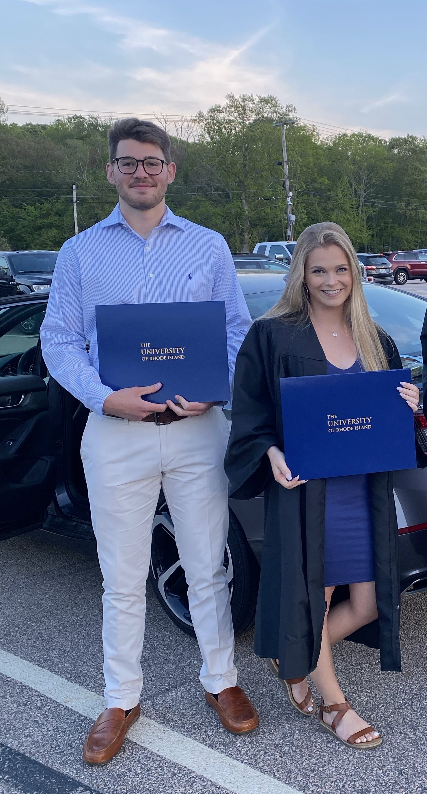

My name is Michael Guadagni and above is a picture of myself when I was in Block Island last summer. I am currently 21 years old and live in East Greenwich, Rhode Island. I have lived in this town for all life and have only left on a few occasions. I just graduated from the University of Rhode Island in the spring of 2021 with a bachelor's degree in mechanical engineering. In the past year, I have found my passion of coding and programming. I am now taking a few programming classes at URI to eventually obtain a Masters degree in computer science. My end goal is to become a succesful software engineer.
|  |
Pictured to the left is myself and my girlfriend, Lilly Saytes, when we attended graduation recently. She also graduated with a bachelor's degree in mechanical engineering. She obtained a full time job in Massachusetts. My family consists of my dad, mom, older brother, and older sister. My brother, James, graduated from URI last year and currently still lives in Rhode Island. My sister, Hannah, also graduated from URI a few years ago to become a nurse in Tampa, Florida. Pictured below are my two pets. My dog Daisy and my cat Munchkin. |